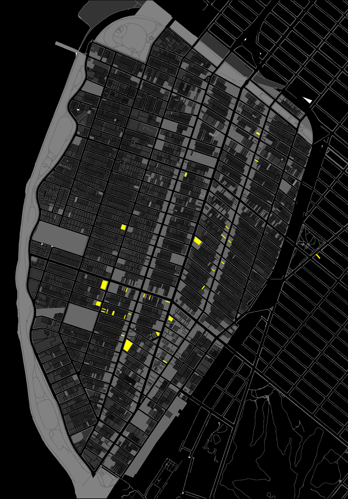
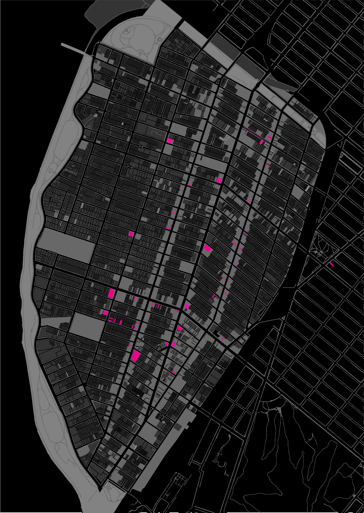
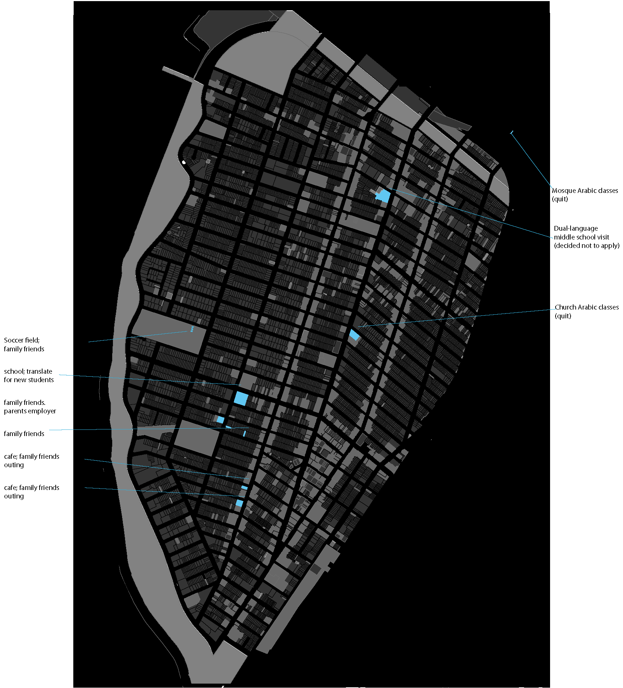

Introduction
Situated in the south-western corner of Brooklyn, Bay Ridge has one of the highest concentrations of Arabic speakers in the US. Far from the notion of an enclave as a homogenous network of a single ethnicity or language, Bay Ridge hosts large communities of Greek, Spanish, Italian and increasingly Fujian speakers. Still, in some parts of the neighborhood, nearly one-sixth of residents speak Arabic, and the area remains a magnet for the larger Arab-American community. As a result, Arab Bay Ridge illustrates both the spaces of 'old' enclave - a tightly knit community and place to live and walk - as well as the 'new' enclave, as a commute-in hub for commerce and services, not necessarily defined by spatial boundaries. Bay Ridge’s cluster also provides opportunities and is frequently a first stop for new arrivals, a place where even those without connections can find employment and services in their language.

Bay Ridge through a Monolingual's Eyes
Although the economic and social impacts of ethnic clustering has been studied extensively, the impacts of linguistic agglomeration are less understood. As large walkable enclaves are relatively rare in the US, at least for less-common languages, the Arabic enclave in Brooklyn provides a type of ‘extreme case’, to start to answer the question of how language intersects with space. Given the dense concentrations of residents and businesses, which is theoretically ideal for language maintenance and access,the neighborhood provides an opportunity to chart the physical language ‘landscape’ for monolinguals and bilinguals.
Space from monolingual eyes
How does a neighborhood look for a non-English speaker? How does language structure our understandings of space, and vice versa? To begin to answer this, we initiated an embedded ethnographic analysis of two recent Syrian arrivals in Bay Ridge. After living for seventy-some years in their small city in Syria, Marhaf and Nawal arrived exactly 12 months ago to New York City, and moved to Bay Ridge with their son and his family. The neighborhood is new to them, and they have no existing family or social connections to walk them around. Their explorations began slowly, walking greater and greater distances from their home on the closest commercial street. They made initial contact with two religious organizations, and a few months later with a social service organization. After they received insurance, they found a network of Arabic-speaking health professionals; a few months later, Nawal found a hair salon recommended by new friends. After they re-started their bakery, continuing the profession the had in Syria (profiled in
the NYTimes), they began walking further afield to find ingredients and packaging materials. As a result, their neighborhood expanded, and they became regular customers at a range of area stores. Though they are in a new country, with a new language, in just one year, their community has grown exponentially.
This map illuminates the places they currently frequent - the spaces that they have discovered where they can operate in their native language. Places where they can speak Arabic are the places ‘with the lights on’ for them; everywhere else they currently perceive as inaccessible. There are gradations to these places; some are accessible only because they have an employee who is intermittently available; some are staffed by Arabic speakers of a different dialect. Other spaces, such as religious congregations, predictably have large gatherings where everyone expects to speak in Arabic. There they feel most at home.
Space from bilingual eyes

Bay Ridge through a Bilingual's Eyes
If English is also spoken, how does this map change? The second map charts the spaces where two middle-aged bilinguals in their family, also with 12 months of residency in the area, speak Arabic. At first glance, it is a remarkably similar map; the main difference is that all of the other areas of commerce and public space (marked in light grey) are also accessible.
Space from a child's eyes

Bay Ridge through Z's Eyes
How does the neighborhood seem to a 11-year old? Z, a fifth-grader who is already fully fluent in English after one year in the US, sees little need for Arabic in her daily life. She speaks with her parents in Arabic when she feels like it, occasionally code switches with bilingual schoolmates, and uses formal greetings with elderly neighbors or bilingual shopkeepers. Otherwise, she says, “I’m in America.” Her parents have frantically tried placing her in two Arabic ‘Saturday Schools’ in the hope that she will increase her fluency in Arabic, but without her investment in maintaining her Arabic, they do not know if it will happen.
Conclusion
These individuals represent three very different types of multilingualism in Bay Ridge, and the maps illustrate how language affects one’s experience of the city. Linguistic status at all points along the continuum opens and closes doors—literally. Whether monolingualism in English or Arabic is through choice or consequence, it affects access to spaces from stores to repair shops to soccer games. In a simplified Arabic/English Bay Ridge, only bilinguals have access to all of the spaces. Without the presence of a bilingual language ‘broker’, many spaces of Bay Ridge are inaccessable to monolingual speakers.
We see from these maps that even in a place that may appear to be a “linguistic enclave” to an outsider is not necessarily homogenous to its inhabitants. Though Marhaf and Nawal speak Arabic and live in what may be considered an Arabic-speaking neighborhood, not every space is accessible to them. Arabic is not entirely mutually-intelligble across dialects, and the type of understanding varies by the region of their interlocutor. More broadly, the inclusion they find at church or on the stoop of a friend’s store does not translate to every store, doctor, or library. Instead, their mapping represents a piecemeal, place-by-place construction of a neighborhood, as they find the bright spots where they can speak and be understood in their own language.
These mappings represent initial explorations into the topography of spoken language use and access in a clustered urban enclave. They will be expanded and examined by additional metrics in the next phase.
Project Team: Laura Kurgan, Bernadette Baird-Zars, and Michelle McSweeney
Return to Case Studies